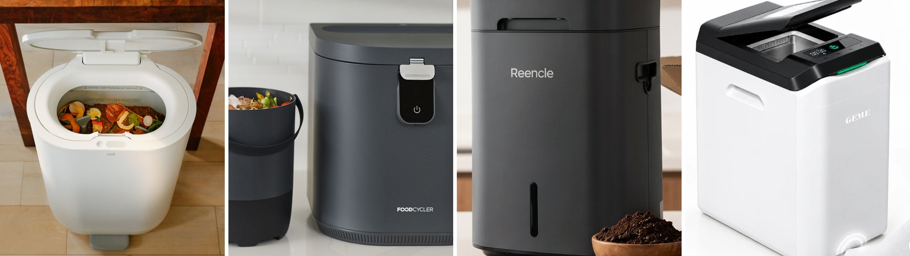
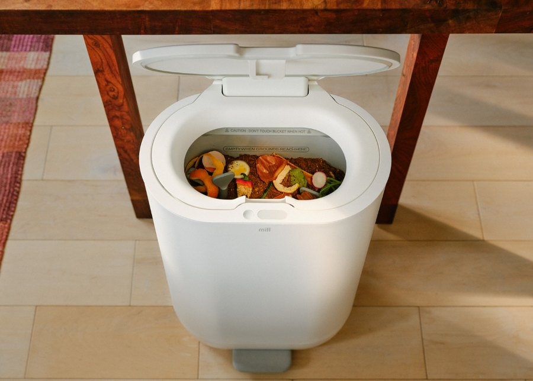
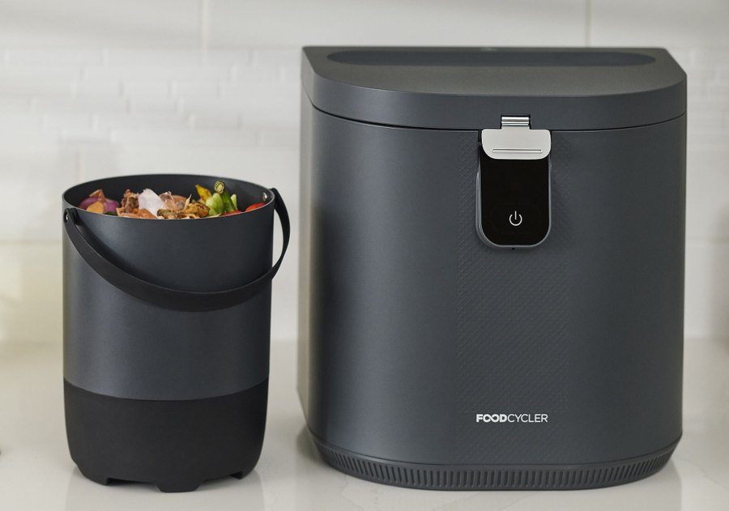
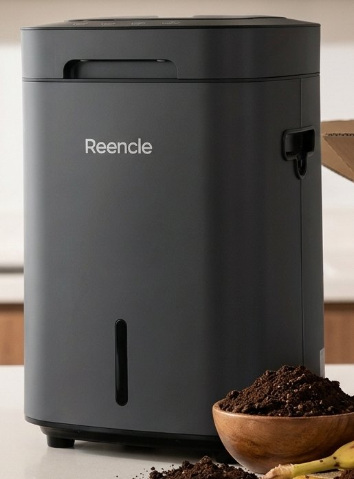
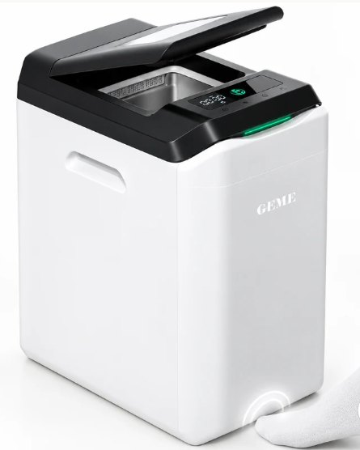

Best Electric Composters: The 4 Options
Four machines dominate the electric kitchen composter market. Here is what each one actually does, why you might want it, and why you might not, all on one short page.
This page contains affiliate links. If you buy through them we may earn a commission, at no extra cost to you.
| Machine | How it works | Output | Takes meat & dairy | Refills or extras | Price (USD) |
|---|---|---|---|---|---|
| Mill | Dehydrates scraps in a trash-can-size bin | Dry grounds (not compost) | Yes | Optional mail-back pickup | $999, or $35/mo rental |
| FoodCycler Eco 5 | Dehydrates and grinds in a 5 L bucket | Dry crumbs (not compost) | Limited | Carbon filter refills | ~$500 |
| Reencle Prime | Living microbes digest scraps continuously | Real compost (~30 days) | Yes | Carbon filter, every 9-12 months | ~$399-$449 |
| GEME Terra 2 | Living microbes digest scraps continuously | Real compost (continuous) | Yes | None | ~$699 |
The one thing to understand: dehydrators (Mill, FoodCycler) dry and grind your scraps into a shelf-stable powder. Bio-reactors (Reencle, GEME) use living microbes to actually compost, including meat and dairy. Powder reduces your trash; compost feeds your soil.

1. The MillWhat it is: a trash-can-size food recycler on a subscription. You fill the bucket with scraps all week or all month; it dehydrates and grinds them into dry "food grounds." You can use the grounds yourself, or box them up and mail them back to Mill, which turns them into animal feed.
Why go with it:
- Handles large volumes and even meat and dairy without smell.
- Truly hands-off: fill it, forget it, run it on a schedule from the app.
- The mail-back program is a real out for people with no garden and nowhere to use compost.
Why skip it:
- Most expensive option here: $999 outright or $35/month rental with a 12-month commitment, and pickup is about $192/year extra.
- The output is dried food grounds, not compost you can feed a garden with.
- Big footprint: it's the size of a trash can, not a countertop appliance.

2. FoodCycler (Eco 5)What it is: the best-known countertop unit. A 5-liter bucket dehydrates and grinds a batch of scraps in roughly 4-9 hours, shrinking the volume by around 90%. A carbon filter keeps it odorless.
Why go with it:
- Fastest results of any machine here: scraps to dry crumbs in one evening.
- Compact, quiet, and one-button simple; the bucket doubles as a lidded countertop collection pail.
- Great pre-step if you already have an outdoor compost bin or worm bin: the dried crumbs break down quickly once they get outside.
Why skip it:
- It does not make compost. The output is dried, mostly sterile crumbs that still need soil to finish the job.
- Ongoing cost: carbon filter refills roughly every 3-4 months.
- Limited inputs: big bones, lots of liquids, and heavy meat/dairy loads are a problem.

3. Reencle PrimeWhat it is: a 14-liter bio-reactor. A culture of living microbes sits in the chamber, eating whatever you add (fruit, veg, meat, fish, dairy, leftovers) and turning it into real compost in about 30 days. Runs continuously; under 28 dB.
Why go with it:
- Real compost, not dried scraps: biologically active, straight from the machine.
- The cheapest way to get true microbe composting of the machines on this page.
- No refill pods to buy; handles meat and dairy that a backyard bin won't.
- Very quiet and fine to run overnight in an open-plan space.
Why skip it:
- It's a living system: it likes steady feeding, and a neglected or overloaded culture can smell sour.
- The finished compost is best cured for a couple of weeks before it goes in the ground.
- The carbon filter needs replacing roughly every 9-12 months.
- Modest throughput: about 1.5 lbs/day recommended (2.2 lbs max), so it suits 1-3 people, not a big family kitchen.

4. GEME Terra 2What it is: GEME's compact bio-reactor: a warm, moist, oxygen-rich chamber with living microbes that digests up to about 2 kg (4.4 lbs) of scraps a day, continuously, including meat, dairy and small bones. No pods or refills; a permanent ion filter handles odor.
Why go with it:
- Real compost on a continuous "add and forget" cycle: scoop out what you need, keep feeding.
- Roughly double the daily throughput of the Reencle Prime, so it keeps up with busier cooking.
- No recurring consumables at all.
Why skip it:
- Priciest bio-reactor on this page at about $699.
- Needs space: it's a floor unit, not a countertop one.
- If you only cook occasionally, you're paying for capacity you won't use. The Reencle covers a 1-2 person kitchen for less.
Bottom line
No garden, hate taking trash out? Mill: the mail-back loop does the rest for you.
Already compost outside and just want cleaner, smaller scraps between trips? FoodCycler.
Want real compost, 1-3 people, best value? Reencle Prime.
Want real compost and cook for a busier household? GEME Terra 2.
Want the deep dive? The long version (how dehydrators and bio-reactors work, operating costs and cleaning schedules) is in our Electric Composters Complete Guide.